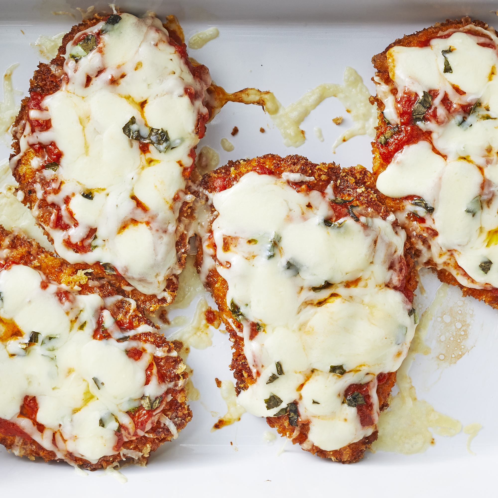

Chicken Parmesan

Description
Chicken Parmesan is one of my favorite comfort foods. It is great along side pasta, and fun to make homemade marinara as well!
I have found that this recipe works best with all fresh ingredients. Don't be afraid to buy higher quality mozzarella and herbs, as well as marinara from scratch.
Ingredients
- Chicken breast
- Fresh Mozzarella
- Fresh Basil
- Panko Breadcrumbs
- Egg
- Flour
- Olive oil
- Salt
- Pepper
- Parmesan cheese
- Filet and pound out chicken until about 1/2in thick, and season lightly with salt and pepper
- Preheat oven to 375 degrees
- Put flour, egg, and Panko breadcrumbs in 3 separate dishes
- Season flour generously with salt and pepper. Add grated Parmesan cheese to Panko breadcrums
- Coat chicken pieces with flour, then egg, then panko. Set aside until all are coated
- Heat pan with just enough olive oil until bottom is coated and oil starts to shimmer
- Carefully place chicken in pan, flipping after 3 - 4 minutes until browned
- Once all pieces are browned, place in a baking dish
- Top with marinara, fresh mozzarella, and fresh basil. Cook in oven until cheese is melted and slight browned
- Remove from oven and let cool for 5 minutes
You can serve this dish with a side of pasta if desired. Enjoy!